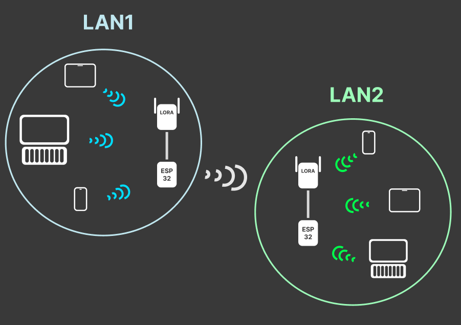
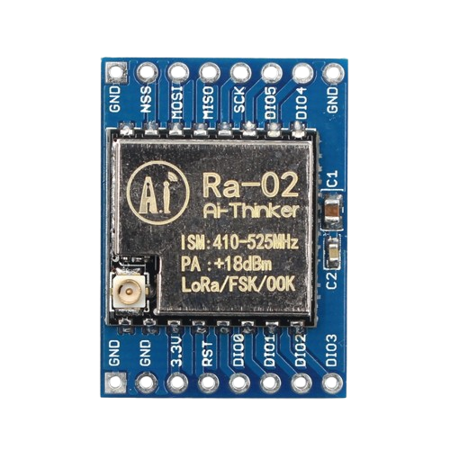
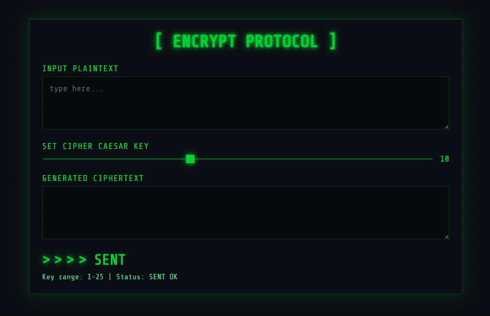
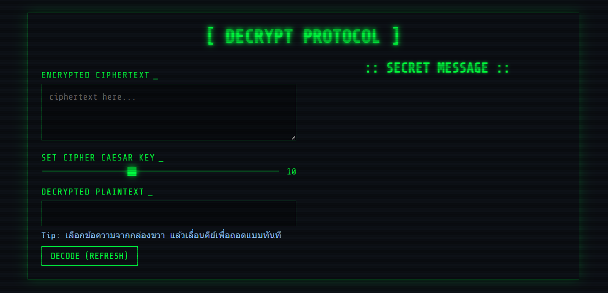

// บทคัดย่อ
เนื่องจาก ณ ปัจจุบันการส่งข้อความหาใครสักคน อาจจะมีใครบางคนเฝ้ามองข้อความที่เราส่งอยู่ แต่จากการเรียน Discrete Math แล้วได้รู้จัก Caesar Cipher Algorithm สมาชิกในกลุ่มจึงอยากจะเอาความรู้ในเรื่องนี้มาใช้แก้ปัญหาในการถูกอ่านข้อความ โดยโปรเจกต์นี้เป็นการสร้างอุปกรณ์ต้นแบบที่ใช้ ESP32 สำหรับ เข้ารหัส (Encode) และ ถอดรหัส (Decode) ข้อความ โดยอ้างอิงจากหลักการของ Caesar Cipher ซึ่งเป็นวิธีการเข้ารหัสแบบคลาสสิกที่ Julius Caesar เคยใช้ในการส่งข้อความลับให้ทหารของเขา
// Source Code
โค้ดทั้งหมดของโปรเจกต์นี้พร้อมใช้งานบน GitHub
// รายละเอียดโปรเจกต์

ESP32

LoRa SX1278

SENDER PAGE

RECEIVER PAGE
การทำงานของฝั่งส่ง
- เชื่อมต่อ WiFi: ESP32 จะเชื่อมต่อกับเครือข่าย WiFi และแสดง IP Address ผ่าน Serial Monitor
- สร้างเว็บเซิร์ฟเวอร์: ESP32 สร้างเว็บเซิร์ฟเวอร์ที่เข้าถึงได้ผ่าน IP Address นั้น
- หน้าเว็บสำหรับผู้ใช้: ผู้ใช้เข้าหน้าเว็บเพื่อป้อนข้อความ (Plaintext) และเลือกค่าคีย์ (Key) ผ่านแถบเลื่อน
- แสดงผลเรียลไทม์: หน้าเว็บจะแสดงผลลัพธ์การเข้ารหัส (Ciphertext) ทันที
- ส่งข้อมูล: เมื่อกดปุ่ม "SENT" ข้อความที่เข้ารหัสแล้วจะถูกส่งไปยัง ESP32
- ส่งสัญญาณ LoRa: ESP32 รับข้อความและส่งออกเป็นสัญญาณวิทยุผ่านโมดูล LoRa
การทำงานของฝั่งรับ
- เชื่อมต่อ WiFi: เช่นเดียวกับฝั่งส่ง, เมื่อเปิดเครื่อง ESP32 ฝั่งรับจะเชื่อมต่อกับเครือข่าย WiFi ที่กำหนดไว้ และแสดง IP Address ของตัวเองผ่าน Serial Monitor
- สร้างเว็บเซิร์ฟเวอร์: ESP32 จะสร้างเว็บเซิร์ฟเวอร์ที่ผู้ใช้สามารถเข้าถึงผ่าน IP Address นั้น
- รอรับสัญญาณ LoRa: อุปกรณ์จะอยู่ในโหมดพร้อมรับสัญญาณ LoRa ตลอดเวลา
- จัดเก็บข้อความ: เมื่อได้รับข้อความที่เข้ารหัสผ่าน LoRa , มันจะถูกจัดเก็บไว้ในรายการ (vector) ภายในหน่วยความจำของ ESP32 อุปกรณ์จะเก็บข้อความได้สูงสุด 10 ข้อความ หากเกิน, ข้อความที่เก่าที่สุดจะถูกลบออกไป
- หน้าเว็บสำหรับถอดรหัส: เมื่อผู้ใช้เข้าไปยัง IP ของ ESP32 จะพบหน้าเว็บที่แบ่งเป็นสองส่วนหลัก:
- ส่วนถอดรหัส (ซ้าย): เป็นเครื่องมือสำหรับถอดรหัส ผู้ใช้สามารถวางข้อความที่เข้ารหัส (Ciphertext) , เลื่อนแถบเพื่อเลือกคีย์ (Key), และผลลัพธ์การถอดรหัส (Plaintext) จะปรากฏขึ้นทันที
- ส่วนกล่องข้อความ (ขวา): แสดงรายการข้อความลับ (" SECRET MESSAGE ") ที่ได้รับผ่าน LoRa แต่ละข้อความจะมีปุ่ม "READ" เพื่อนำข้อความนั้นไปใส่ในเครื่องมือถอดรหัสฝั่งซ้าย และปุ่ม "DELETE" เพื่อลบข้อความนั้นออกจากรายการ